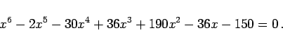
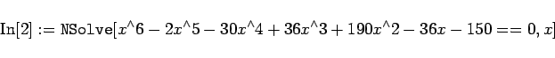
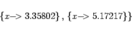
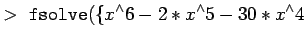
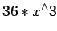
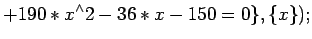

Inhalt Index DeskTop Bronstein

 Computeralgebrasysteme Einführung Einführende Beispiele für die Hauptanwendungsgebiete
Computeralgebrasysteme Einführung Einführende Beispiele für die Hauptanwendungsgebiete


Computeralgebrasysteme besitzen umfangreiche Prozeduren zur Behandlung von Aufgaben der numerischen Mathematik. Das betrifft sowohl die Lösung algebraischer Gleichungen, linearer Gleichungssysteme, die Lösung transzendeter Gleichungen, aber auch die Berechnung bestimmter Integrale, die numerische Lösung von Differentialgleichungen, Interpolationsprobleme und vieles andere mehr.
| Beispiel |
|
Gesucht: Lösungen der Gleichung |
|  | (20.4a) |
Diese Gleichung 6. Grades ist geschlossen nicht lösbar; sie besitzt jedoch 6 reelle Lösungen, die numerisch zu finden sind.
In Mathematica wird eingegeben:
|  | (20.4b) |
Als Antwort erhält man:
|  | (20.4c) |
Das ist eine Liste mit den 6 Lösungen mit einer bestimmten Genauigkeit, die später erläutert wird.
Die Eingabe in Maple lautet:
|  | + |  | |
|  | (20.4d) |